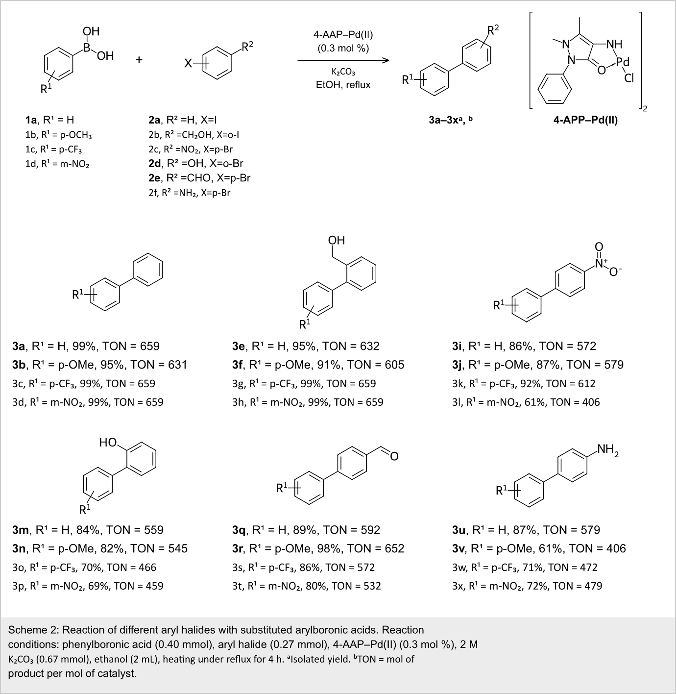

First run · 3a–3f only
Scores and review notes (Chinese)
- 可见记录数量与编号顺序
- 1/1
- 结构化主收率单值（含定性符号）
- 6/6
- 主收率的测定方式
- 6/6
- 按编号核对产物结构（RDKit）
- 6/6
- 按编号核对周转数 TON
- 6/6
本轮只考 3a–3f。原图用 R 基和列表表示系列，成图展开了六个具体结构，每个结构下面可读到收率和 TON。 通式反应头改用 3a 作实例，图注补充了通式。原图右上角的 Pd 配位结构未画出。
The paper groups 24 products under six generic structures. The first run expands products 3a–3f and gives a yield and turnover number for each. Its reaction header omits the separate Pd complex. Later runs cover the full scheme.

本轮只考 3a–3f。原图用 R 基和列表表示系列，成图展开了六个具体结构，每个结构下面可读到收率和 TON。 通式反应头改用 3a 作实例，图注补充了通式。原图右上角的 Pd 配位结构未画出。
覆盖 3a–3x 的 24 项产物。原图 3j 的 TON 末位被裁切，该项不计入 TON 分数。
覆盖 3a–3x 的 24 项产物。原图 3j 的 TON 末位被裁切，该项不计入 TON 分数。
覆盖 3a–3x 的 24 项产物。原图 3j 的 TON 末位被裁切，该项不计入 TON 分数。
沿用第二次盲测保存的 24 项，人工调整骨架方向、文字位置和图注。